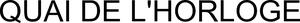

Trade Mark Journal No.2025/044 31 October 2025
WO0000001880677 (14)
Office of origin: Switzerland
Date of International Registration:11 August 2025
Date of designation in the UK:
11 August 2025

International priority date claimed: 18 February 2025
(Switzerland)
(828517)
- Class 14
- Precious metals and their alloys; figurines of precious metals and their alloys or coated therewith; trophies of precious metals and their alloys or coated therewith; jewelry, namely finger rings, earrings, cuff links, bracelets, charms, brooches, chains, necklaces, tie pins, tie clips, jewelry caskets, jewelry cases; precious stones, semi-precious stones (gemstones); timepieces and chronometric instruments, namely chronometers, chronographs, clocks, watches, wristwatches, pendulum clocks, alarm clocks as well as parts and accessories for the aforesaid goods, namely movements for timepieces, parts of movements for timepieces, anchors, barrels, watch springs, clockworks, spring-balance assemblies, pendulums, hairsprings, balance bridges, studs, index-assemblies, oscillating weights, hands, watch dials, watch glasses, watch cases, watch crowns, watch bands, watch chains, watch band clasps, cases for watches, cases for timepieces; apparatus for timing sports events; jewelry; key rings.
Montres Breguet SA (Montres Breguet AG) (Montres Breguet Ltd)
Representative: The Swatch Group AG (The Swatch Group SA) (The Swatch Group Ltd.), 6, Faubourg du Lac, CH-2501 Biel/Bienne, SWITZERLAND